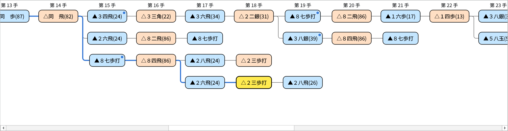
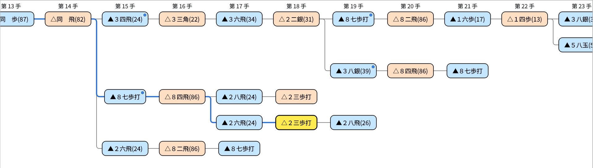
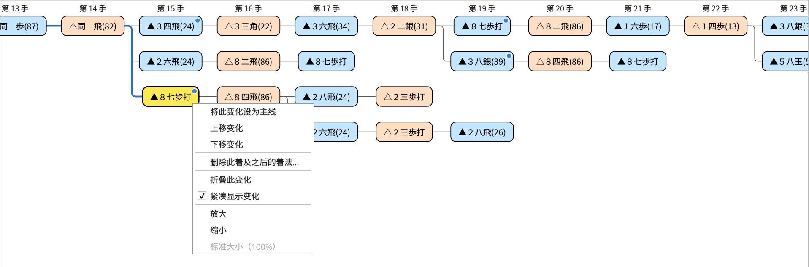
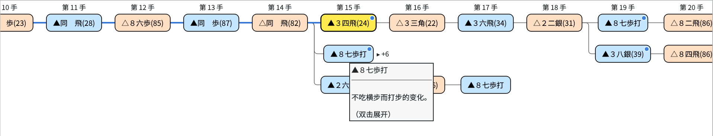
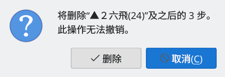
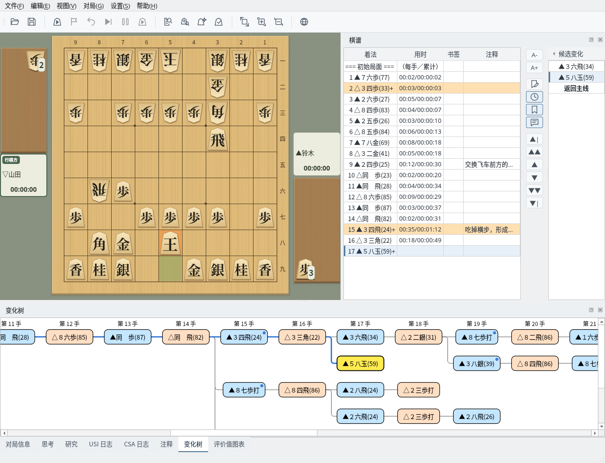

变化树
一览主线与变化的着法，并可通过右键菜单整理和编辑
截图在 Linux 上以简体中文界面拍摄。
变化树的查看方法
按手数对齐排列主线和变化的着法
选择画面下方的“变化树”标签页即可显示。从左端的“初始局面”开始，最上面一行是主线，其下是变化，按手数对齐排列。除了读取棋谱时，对局中走的着法也会立即加入。面板的位置也可以调整（参阅停靠面板）。棋谱栏和候选变化的用法请参阅棋谱显示。
- 蓝框是先手的着法，橙框是后手的着法。
- 黄色的着法是当前棋盘上显示的着法，与棋谱栏和注释中的着法相同。
- 从初始局面到黄色着法的路径以蓝色粗线显示。
- 从同一着分出的变化用竖线相连。
- 有注释的着法右上角带有蓝色圆点。鼠标停在着法上会显示该着法和注释的开头部分。
- 上方的“第 n 手”标题在纵向滚动时也会一直显示在上端。
黄色的着法在画面之外时，会自动滚动到能看到它的位置。


变化树：正在显示变化中的变化（第 18 手）。从初始局面开始的路径以蓝线显示，有注释的着法带蓝色圆点
变化会紧凑地排列在分出它的着法下方的空行中。同一行排列不同的变化时，会空出一手的间隔，以免看起来像连续的着法。
在右键菜单中取消“紧凑显示变化”，则每个变化各占一行，并按变化的顺序排列。此设置会保留到下次。


取消“紧凑显示变化”后的显示（与上图为同一棋谱）
移动与显示操作
用点击和按键移动局面，并可调整显示大小
点击着法即可移动到该局面，棋盘、棋谱栏和候选变化也会切换到同一着。点击变化树后，还可以用以下按键移动。
| 按键 | 作用 |
|---|---|
| ← / → | 移动到同一变化的前一着或后一着（在初始局面按 → 移动到主线第 1 手） |
| ↑ / ↓ | 移动到同一手数中紧邻的上一行或下一行的着法 |
| Home | 移动到初始局面 |
| End | 移动到该变化的最后一手 |
对局中、棋谱分析中和局面编辑中无法选择或编辑着法，但折叠、放大缩小等显示操作仍可使用。
可用 Ctrl＋滚轮（macOS 为 ⌘＋滚轮）、触控板双指缩放，或右键菜单的“放大”“缩小”，在 50%～200% 之间调整显示大小（滚轮和菜单每次 10%）。选择“标准大小（100%）”可恢复原来的大小。显示大小会保留到下次。
在变化树中右键点击，会根据点击的位置显示以下项目。
| 菜单 | 显示条件 | 作用 |
|---|---|---|
| 将此变化设为主线／上移变化／下移变化／删除此着及之后的着法… | 右键点击初始局面以外的着法时（对局中、棋谱分析中和局面编辑中除外） | 编辑变化（参阅编辑变化） |
| 折叠此变化／展开此变化 | 右键点击主线以外的变化中的着法时（有 2 手以上的变化，或其后还有分出的变化） | 隐藏或显示变化的后续着法（参阅折叠变化） |
| 展开所有变化 | 有已折叠的变化时 | 将已折叠的变化全部展开 |
| 紧凑显示变化 | 随时 | 切换是否将变化紧凑地排列在空行中 |
| 放大／缩小／标准大小（100%） | 随时 | 调整显示大小 |


右键点击变化中的着法（第 15 手的▲８七歩打）
折叠变化
隐藏较长的变化，便于查看想看的着法
右键点击变化中的着法并选择“折叠此变化”，只保留该变化的第一手，隐藏后续着法和从中分出的变化。第一手变为虚线框，右侧以“▸ +n”显示被隐藏的手数。鼠标停在上面会显示“（双击展开）”。
要恢复时，双击第一手，或右键点击并选择“展开此变化”。有已折叠的变化时，可用右键菜单的“展开所有变化”一次全部展开。
从棋谱栏或候选变化移动到被隐藏的着法时，会自动展开。当前显示的着法被隐藏时，已折叠变化的第一手会变成黄色。


折叠第 15 手▲８七歩打的变化后的显示（隐藏了后续着法和其后的变化共 6 手）
编辑变化
通过右键菜单设为主线、调整变化顺序或删除着法
右键点击变化树中的着法，或棋谱栏右侧“候选变化”中的着法，可以进行以下操作。不能使用的操作显示为灰色。编辑后棋谱会变为未保存状态，请根据需要保存。
| 菜单 | 作用 |
|---|---|
| 将此变化设为主线 | 将从初始局面到该着的着法设为主线。该着之后，接续的着法（最上面的变化）直接成为主线。主线上的着法不能使用。 |
| 上移变化／下移变化 | 将包含该着的变化，在从同一着分出的变化中上移或下移一位。最上面的变化是该分支点的主线一侧。候选变化的排列顺序和保存时变化的顺序也会改变。 |
| 删除此着及之后的着法… | 删除该着、其后续着法以及从中分出的变化。确认要删除的手数后点击“删除”即可删除（无法撤销）。当前显示的着法被删除时，会移动到被删除着法的前一着。 |


删除确认：显示要删除的手数
在棋盘上走子添加变化
不在对局时在棋盘上走的着法会记录到棋谱中
在没有进行对局、棋谱分析、研究或局面编辑时，在棋盘上移动棋子，这一着会作为当前着法的下一着记录到棋谱中。
- 还没有下一着时：成为该变化的后续着法
- 已有相同的着法时：只移动到该着
- 不同的着法时：成为新的变化，并显示在候选变化和变化树中
升变与否会进行确认。显示认输等终局着法时，视为从其前一个局面走出的着法。刚启动等棋谱为空时，也会从当前显示的局面开始记录。记录新的着法后，棋谱会变为未保存状态。


显示第 16 手后走▲５八玉：成为第 17 手的新变化，显示在候选变化和变化树中